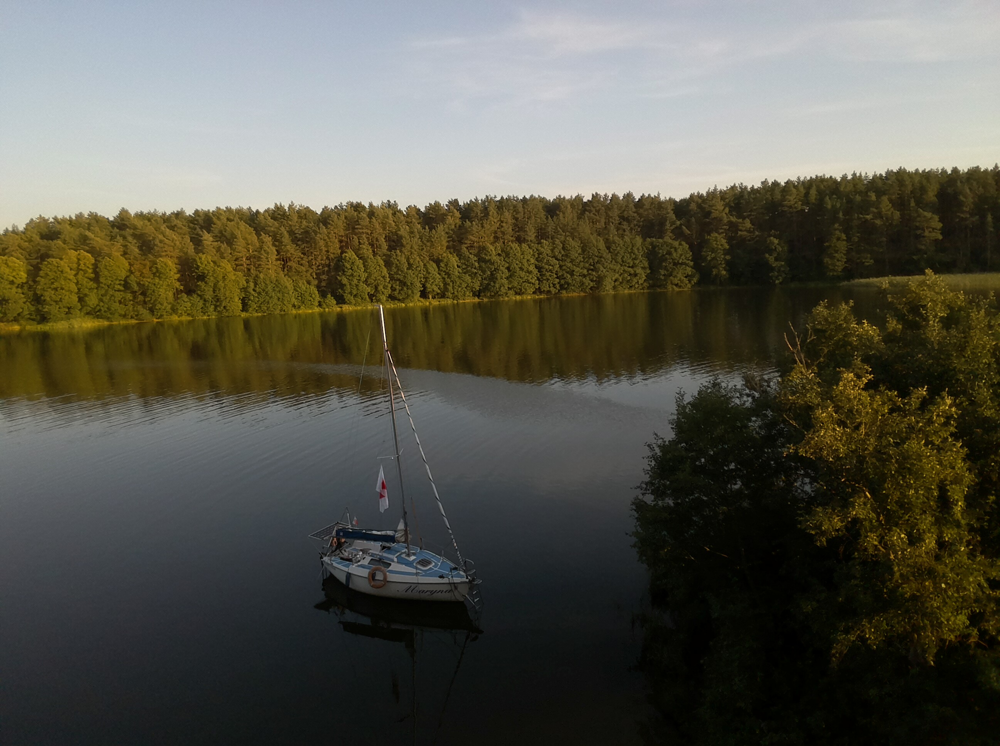
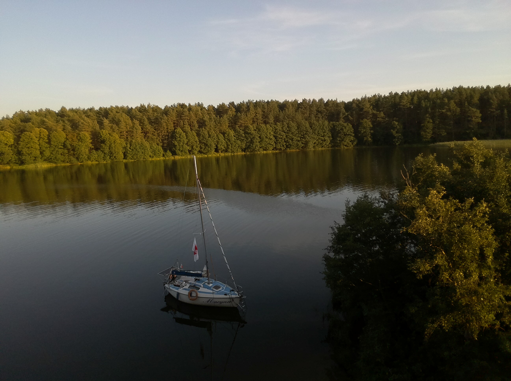

JACHTY
MARYNA

 



CENNIK
| JACHT | - 30.04 | 01.05 - 31.05 | 01.06 - 30.06 | 01.07 - 31.08 | 01.09 - 30.09 | 01.10- |
|---|---|---|---|---|---|---|
| Sasanka 620 |
150 | 200 | 250 | 300 | 250 | 150 |
INFO:
Kaucja: 1000zł
Wydawanie Jachtu w godzinach od 14 do 18 pierwszego dnia czarteru.
Zdawanie jachtów w godzinach od 8 do 10 ostatniego dnia czarteru.
Jacht jest ubezpieczony OC/AC/NNW.
Sprzątanie końcowe: 100zł.
Zwierzę na pokładzie: 150zł (za cały rejs).
REZERWACJA
Uwaga! Formularz proszę wypełnić dopiero po telefonicznym lub mailowym ustaleniu wolnego terminu.
W odpowiedzi dostaniecie Państwo maila z danymi bankowymi do dokonania przelewu oraz umową czarteru. Serdecznie prosimy o jej wypełnienie oraz odesłanie lub dostarczenie pocztą na adres siedziby firmy.
Po wpływie zadatku, rezerwacja nabiera mocy prawnej!
CO ZABRAĆ NA REJS?
Obuwie
Obuwie żeglarskie powinno się charakteryzować dobrą przyczepnością i nie przemakalnością. Na lato wystarczające są tenisówki , np. na miękkiej gumowej podeszwie, która nie ślizga się na mokrej powierzchni. Co istotne – upewnijmy się również, że podeszwa nie zostawi śladów na laminacie jachtu.
Dobrze, jeśli bieżnik buta nie jest zbyt skomplikowany i nie ma zbyt wielu przestrzeni na przenoszenie piasku czy innego brudu.
Jeśli w gorące dni używamy sandałów powinny one dobrze trzymać się na nodze. Podobnie jak w przypadku prowadzenia auta – klapki nie są najlepszym rozwiązaniem. Okazać się też mogą dość niebezpieczne. Pamiętajmy, że na jachcie podczas manewrów poruszamy się dynamicznie, obuwie powinno zapewnić nam stabilność.
Nakrycie głowy
Na ciepłe dni świetnie sprawdzi się czapka z daszkiem czy tez chustka. Przewaga czapki jest taka, że widoczność pod słońce jest lepsza niż w chustce. Najważniejsze jednak – podobnie zresztą jak na lądzie – aby chronić głowę przed przegrzaniem.
Okulary przeciwsłoneczne z filtrem UV również okazują się użytecznym gadżetem. Pamiętajmy jednak aby nosić je na sznurku. Podczas manewrów odłożenie okularów na bok lub do kieszeni może zakończyć się ich utonięciem lub zmiażdżeniem.
Na chłodniejsze dni czapka jesienna będzie jak znalazł.
Odzież na deszcz
Najpopularniejszym okryciem wierzchnim na jacht jest sztormiak, którego najważniejszą funkcją jest nieprzemakalność. Współczesna odzież żeglarska oparta jest na nowoczesnej technologii. Zapewnia świetną ochronę przed wiatrem i deszczem a jednocześnie pozwala oddychać organizmowi.
Nie oznacza to jednak, że do rekreacyjnego pływania potrzebujemy drogiego profesjonalnego sprzętu.
Wystarczy aby nasz sztormiak spełniał podstawowe zadanie – nie przepuszczał wody, chronił od wiatru, miał jakąkolwiek wentylację. Kieszenie oraz daszek (przedłużenie) w kapturze to zawsze dodatkowe atuty – zwłaszcza gdy wiatr zacina w twarz.
Najpotrzebniejsze rzeczy:
Pakując się na rejs warto pamiętać, że na jacht służy nam jednocześnie do spania jak i żeglowania, a zatem przestrzeń do życia jest dość mocno ograniczona. Przy większej załodze rozmiar naszego bagażu naprawdę będzie miał znaczenie. Zabierzmy zatem ze sobą te rzeczy, które są faktycznie niezbędne i nie będą powodować bałaganu i zabierać nam cennej przestrzeni.
Poniżej lista rzeczy, które sugerujemy zabrać na rejs. Oczywiście jest to taka podstawowa lista rzeczy, którą każdy uczestnik rejsu powinien modyfikować/uzupełniać zgodnie ze swoimi potrzebami
Przybory toaletowe
Bielizna (majtki, skarpety, etc)
T-shirty
2 pary spodni długich
2 pary krótkich spodenek
2 bluza/sweter
Strój kąpielowy/kąpielówki
Sztormiak
Rękawiczki (do lin)
Czapka/chustka
Okulary przeciwsłoneczne z filtrem UV
Krem do opalania
Latarka (najlepiej wodoszczelna)
Etui wodoszczelne na telefon / aparat
Obuwie
klapki (pod prysznic)
ręcznik kąpielowy / ręcznik zwykły
Środek na komary/gzy
Leki – jeśli przyjmujemy
Śpiwór
smycz do spodni/ na szyję (pamiętaj, że jeśli coś wpadnie do wody, to najprawdopodobniej szybko utonie)
prowiant i wodę
dobry humor 😉